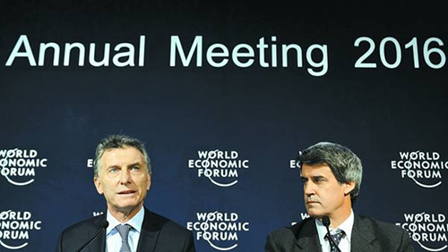

Real Chubut - Agencia de Noticias


Llega la hora de la verdad para el foro de inversiones de la Argentina

No se trata de un Mundial. Sin embargo, la cuenta regresiva está activa en la pantalla. Días, horas y segundos computan el tiempo que falta para el próximo martes, día en el que al "Argentina Business & Investment Forum" le llegará la hora de la verdad. En el mercado local la llaman la "Mini-Davos" por las semejanzas con el clásico europeo en el que los primeros mandatarios, funcionarios y empresarios están en contacto directo.
Durante tres días la atención estará puesta en un único lugar: el Centro Cultural Kirchner (CCK). Desfilarán por sus pasillos 1600 empresarios, CEO globales, regionales y locales. La misión del Gobierno es clara: sumar el mayor número de inversiones posible. Esa es la carta de presentación que lleva el presidente Mauricio Macri y también el espíritu de las invitaciones que se cursaron a los principales referentes del mundo de los negocios.
Durante tres días el Centro Cultural Kirchner verá desfilar 1600 empresarios, CEO globales, regionales y locales..
En el Gobierno hay optimismo porque consideran que la convocatoria será exitosa. Se jactan de haber organizado el encuentro en tiempo récord. La apuesta es tal que hasta en el mítico Square Garden, en Nueva York, se colocó un cartel promocionando el evento. Pero aún falta la otra mitad del partido: la concreción de los desembolsos.
El jefe de Gabinete, Marcos Peña, se anticipa a los resultados y ya lo califica como "hito", aunque es consciente de que el éxito depende de la materialización de los proyectos. "No queremos dar cifras, pero ojalá que se concrete la mayor cantidad de inversiones", dijo a LA NACION.
Juan Procaccini, presidente de la Agencia Nacional de Inversiones, y Horacio Reyser, asesor de Macri están detrás de todos los detalles. "Organizamos un foro como país ambicioso. El Presidente tomó la decisión de poner una fecha, convocar a empresas del mundo para ver las oportunidades de inversión y generar empleos. Es una etapa de cambio en la Argentina, con un alto nivel de expectativas", se entusiasmó. Estarán representados todos los sectores estratégicos: agro, petróleo y gas, energía, infraestructura, transporte, propiedades, telecomunicaciones, bienes industriales, sector manufacturero, y servicios financieros y profesionales, sólo por citar algunos. La mayoría de los directivos comenzaron a aterrizar desde ayer y las vacantes en los hoteles cinco estrellas acusan recibo. Tras una temporada muy baja en términos de ocupación algunas filiales están poniendo el cartelito de "no hay más localidades" para esos días. Habrá representantes de unos 67 países y 970 empresas, de las cuales un 75% son internacionales y un 25%, argentinas. Los funcionarios de gobiernos locales, regionales y también de destinos disímiles ya son 400. A tal punto que desde la Agencia Nacional de Inversiones habilitaron una sala extra para 500 personas en el subsuelo del CCK.
El "mini Davos" -se esperanzan en el Gobierno- "será el evento más importante en la historia de la Argentina y promete ser una marca indeleble en América latina". El encuentro ya tiene su staff de conferencistas completo. Y hay pesos pesados. Estarán Tim Draper (fundador de Draper Associates), Fahad Al-Gergawi (CEO de la Dubai Investment Development Agency), Jane Fraser (CEO para América latina del Citigroup), Michel Hourcard (vicepresidente Senior para las Américas, Exploración & Producción de la petrolera Total) y Patrick Zhong, director gerente de Estrategias e Inversión Global del Fosun Group), entre muchos otros extranjeros y argentinos. Incluso habrá funcionarios de otros países como el viceministro de Relaciones Exteriores de Inglaterra, "Estamos sumamente entusiasmados, es una convocatoria increíble", afirmó a LA NACION Procaccini.
Habrá un plenario para los grandes speakers sobre temas estratégicos, como la educación, el trabajo y la seguridad jurídica, según contaron, y variosworkshops habilitados para unas 200 personas en las que se debatirán temas sectoriales. En ellos participarán los ministros de cada área y sus equipos. El tercer día será el espacio dedicado a los emprendedores y las pymes.
De acuerdo con los datos oficiales, la Argentina presenta en la actualidad oportunidades en todos los sectores de la economía. Existen oportunidades de inversión por más de US$ 175.000 millones, distribuidos en varias actividades: energía y minería (US$ 76.000 millones), infraestructura (US$ 75.000 millones), agroindustria (US$ 15.000 millones), bienes industriales (US$ 5000 millones), servicios y tecnologías (US$ 7000 millones), entre otros.
En el detrás de escena hay marcas registradas en el mundo de este tipo de eventos. Richard Attias, quien organizó durante muchos años el Foro Económico de Davos, será el responsable de atraer a los CEO y referentes de los países más disímiles.
Attias tiene en su CV la organización de la iniciativa global de Clinton y la conferencia de los premios Nobel. También fue uno de los gestores del New York Forum y antes de establecer su compañía en Nueva York, asesoró al emirato de Dubai en su estrategia de marca y también pasó por el mundo corporativo en IBM, para luego fundar varias compañías de IT. También realizó más de 1000 eventos para corporaciones globales en la medida en que Marruecos, su país original, fue el puntapié inicial para luego vivir en Francia, Suiza, Japón, Dubai y en Estados Unidos.
Su compañía forma parte del gigante mundial de la publicidad WPP y por ello no sorprende que sir Martin Sorrell, considerado el ejecutivo publicitario más poderoso del mundo, esté también detrás del proyecto.Sorrell fue noticia durante el período kirchnerista por su enojo con los directivos de la filial local de su controlada Young & Rubicam, cuando la dupla del por entonces CEO y ex socio Darío Straschnoy y su director general creativo, Martín Mercado, lanzaron el aviso de Presidencia de la Nación -gestión CFK- que mostraba al capitán de la Selección de Hockey, Fernando Zylberberg, entrenándose en Malvinas para los Juegos Olímpicos de Londres. "Para competir en suelo inglés (nos) entrenamos en suelo argentino", remataba esa publicidad que tantos dolores de cabeza le trajo a Sorrell.